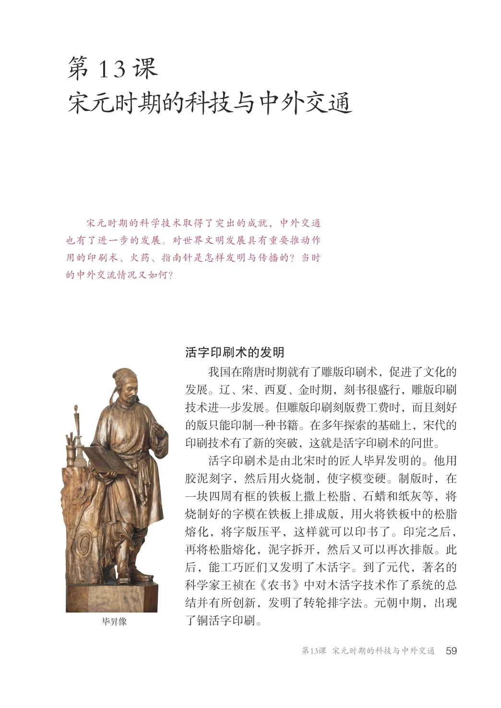
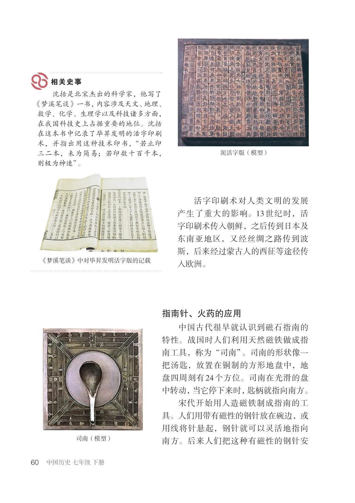
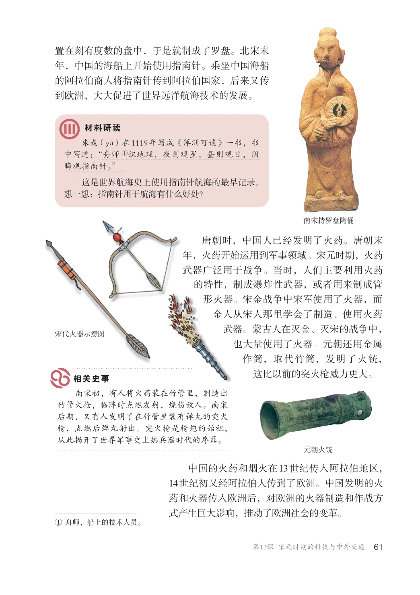
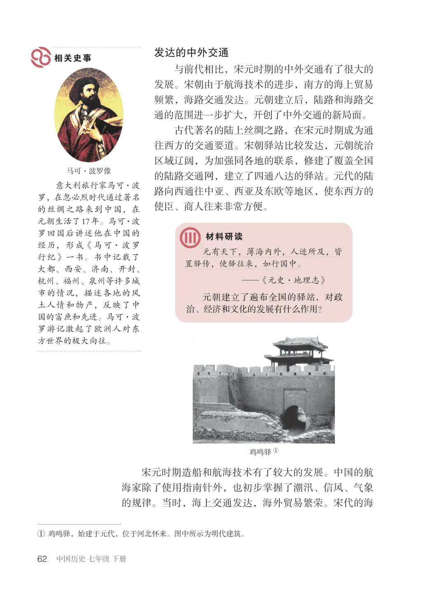
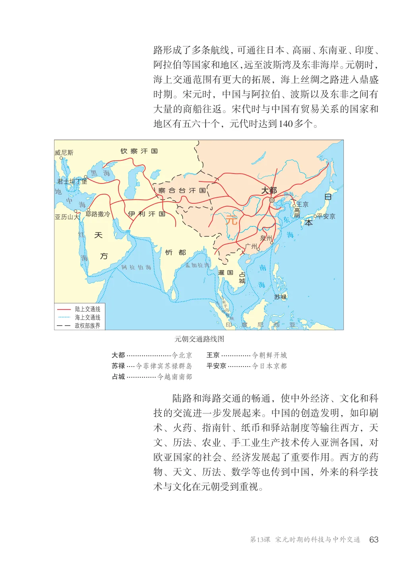
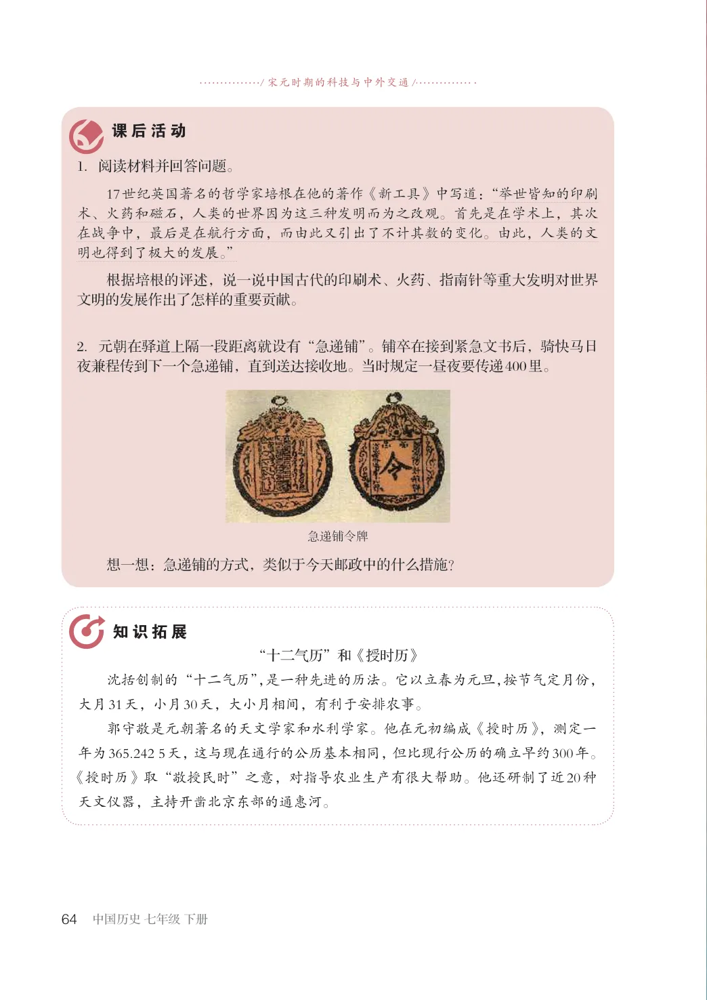

第2单元 · 教材第 59–64 页
第13课 宋元时期的科技与中外交通
文字版依据教材 PDF 文本层整理；复杂地图、图表及版面关系请以右侧教材原页为准。
宋元时期的科学技术取得了突出的成就，中外交通也有了进一步的发展。对世界文明发展具有重要推动作用的印刷术、火药、指南针是怎样发明与传播的？当时的中外交流情况又如何？
活字印刷术的发明
我国在隋唐时期就有了雕版印刷术，促进了文化的发展。辽、宋、西夏、金时期，刻书很盛行，雕版印刷技术进一步发展。但雕版印刷刻版费工费时，而且刻好的版只能印制一种书籍。在多年探索的基础上，宋代的印刷技术有了新的突破，这就是活字印刷术的问世。活字印刷术是由北宋时的匠人毕发明的。他用胶泥刻字，然后用火烧制，使字模变硬。制版时，在一块四周有框的铁板上撒上松脂、石蜡和纸灰等，将烧制好的字模在铁板上排成版，用火将铁板中的松脂熔化，将字版压平，这样就可以印书了。印完之后，再将松脂熔化，泥字拆开，然后又可以再次排版。此后，能工巧匠们又发明了木活字。到了元代，著名的科学家王祯在《农书》中对木活字技术作了系统的总结并有所创新，发明了转轮排字法。元朝中期，出现了铜活字印刷。

沈括是北宋杰出的科学家，他写了《梦溪笔谈》一书，内容涉及天文、地理、数学、化学、生理学以及科技诸多方面，在我国科技史上占据重要的地位。沈括在这本书中记录了毕昇发明的活字印刷术，并指出用这种技术印书，“若止印三二本，未为简易；若印数十百千本，则极为神速”。
泥活字版（模型）
活字印刷术对人类文明的发展产生了重大的影响。13世纪时，活字印刷术传入朝鲜，之后传到日本及东南亚地区，又经丝绸之路传到波斯，后来经过蒙古人的西征等途径传入欧洲。
《梦溪笔谈》中对毕昇发明活字版的记载
指南针、火药的应用
中国古代很早就认识到磁石指南的特性。战国时人们利用天然磁铁做成指南工具，称为“司南”。司南的形状像一把汤匙，放置在铜制的方形地盘中，地盘四周刻有24个方位。司南在光滑的盘中转动，当它停下来时，匙柄就指向南方。宋代开始用人造磁铁制成指南的工具。人们用带有磁性的钢针放在碗边，或用线将针悬起，钢针就可以灵活地指向南方。后来人们把这种有磁性的钢针安司南（模型）

置在刻有度数的盘中，于是就制成了罗盘。北宋末年，中国的海船上开始使用指南针。乘坐中国海船的阿拉伯商人将指南针传到阿拉伯国家，后来又传到欧洲，大大促进了世界远洋航海技术的发展。
朱（yM）在1119年写成《萍洲可谈》一书，书中写道：“舟师①识地理，夜则观星，昼则观日，阴晦观指南针。”这是世界航海史上使用指南针航海的最早记录。想一想：指南针用于航海有什么好处？
南宋持罗盘陶俑
唐朝时，中国人已经发明了火药。唐朝末年，火药开始运用到军事领域。宋元时期，火药武器广泛用于战争。当时，人们主要利用火药的特性，制成爆炸性武器，或者用来制成管形火器。宋金战争中宋军使用了火器，而金人从宋人那里学会了制造、使用火药武器。蒙古人在灭金、灭宋的战争中，也大量使用了火器。元朝还用金属作筒，取代竹筒，发明了火铳，这比以前的突火枪威力更大。
宋代火器示意图
南宋初，有人将火药装在竹管里，制造出竹管火枪，临阵时点燃发射，烧伤敌人。南宋后期，又有人发明了在竹管里装有弹丸的突火枪，点燃后弹丸射出。突火枪是枪炮的始祖，从此揭开了世界军事史上热兵器时代的序幕。
元朝火铳
中国的火药和烟火在13世纪传入阿拉伯地区，14世纪初又经阿拉伯人传到了欧洲。中国发明的火药和火器传入欧洲后，对欧洲的火器制造和作战方式产生巨大影响，推动了欧洲社会的变革。
①舟师，船上的技术人员。

发达的中外交通
与前代相比，宋元时期的中外交通有了很大的发展。宋朝由于航海技术的进步，南方的海上贸易频繁，海路交通发达。元朝建立后，陆路和海路交通的范围进一步扩大，开创了中外交通的新局面。古代著名的陆上丝绸之路，在宋元时期成为通往西方的交通要道。宋朝驿站比较发达，元朝统治区域辽阔，为加强同各地的联系，修建了覆盖全国的陆路交通网，建立了四通八达的驿站。元代的陆路向西通往中亚、西亚及东欧等地区，使东西方的使臣、商人往来非常方便。
马可·波罗像
意大利旅行家马可·波罗，在忽必烈时代通过著名的丝绸之路来到中国，在元朝生活了17年。马可·波罗回国后讲述他在中国的经历，形成《马可·波罗行纪》一书。书中记载了大都、西安、济南、开封、杭州、福州、泉州等许多城市的情况，描述各地的风土人情和物产，反映了中国的富庶和先进。马可·波罗游记激起了欧洲人对东方世界的极大向往。
元有天下，薄海内外，人迹所及，皆置驿传，使驿往来，如行国中。
—《元史·地理志》元朝建立了遍布全国的驿站，对政治、经济和文化的发展有什么作用？
鸡鸣驿①
宋元时期造船和航海技术有了较大的发展。中国的航海家除了使用指南针外，也初步掌握了潮汛、信风、气象的规律。当时，海上交通发达，海外贸易繁荣。宋代的海
①鸡鸣驿，始建于元代，位于河北怀来。图中所示为明代建筑。

路形成了多条航线，可通往日本、高丽、东南亚、印度、阿拉伯等国家和地区，远至波斯湾及东非海岸。元朝时，海上交通范围有更大的拓展，海上丝绸之路进入鼎盛时期。宋元时，中国与阿拉伯、波斯以及东非之间有大量的商船往返。宋代时与中国有贸易关系的国家和地区有五六十个，元代时达到140多个。
钦察汗国
君士坦丁堡
大都
察合台汗国
日
耶路撒冷亚历山大
伊利汗国
元
本
天
方
孟加拉湾
阿拉伯海
陆上交通线海上交通线政权部族界
印度尼西亚
元朝交通路线图
大都.....................今北京
王京..............今朝鲜开城
苏禄....今菲律宾苏禄群岛
平安京...........今日本京都
占城..............今越南南部
陆路和海路交通的畅通，使中外经济、文化和科技的交流进一步发展起来。中国的创造发明，如印刷术、火药、指南针、纸币和驿站制度等输往西方，天文、历法、农业、手工业生产技术传入亚洲各国，对欧亚国家的社会、经济发展起了重要作用。西方的药物、天文、历法、数学等也传到中国，外来的科学技术与文化在元朝受到重视。

/ 宋元时期的科技与中外交通/
1．阅读材料并回答问题。17世纪英国著名的哲学家培根在他的著作《新工具》中写道：“举世皆知的印刷术、火药和磁石，人类的世界因为这三种发明而为之改观。首先是在学术上，其次在战争中，最后是在航行方面，而由此又引出了不计其数的变化。由此，人类的文明也得到了极大的发展。”根据培根的评述，说一说中国古代的印刷术、火药、指南针等重大发明对世界文明的发展作出了怎样的重要贡献。
2．元朝在驿道上隔一段距离就设有“急递铺”。铺卒在接到紧急文书后，骑快马日夜兼程传到下一个急递铺，直到送达接收地。当时规定一昼夜要传递400里。
急递铺令牌
想一想：急递铺的方式，类似于今天邮政中的什么措施？
“十二气历”和《授时历》沈括创制的“十二气历”，是一种先进的历法。它以立春为元旦，按节气定月份，大月31天，小月30天，大小月相间，有利于安排农事。郭守敬是元朝著名的天文学家和水利学家。他在元初编成《授时历》，测定一年为365.2425天，这与现在通行的公历基本相同，但比现行公历的确立早约300年。《授时历》取“敬授民时”之意，对指导农业生产有很大帮助。他还研制了近20种天文仪器，主持开凿北京东部的通惠河。
